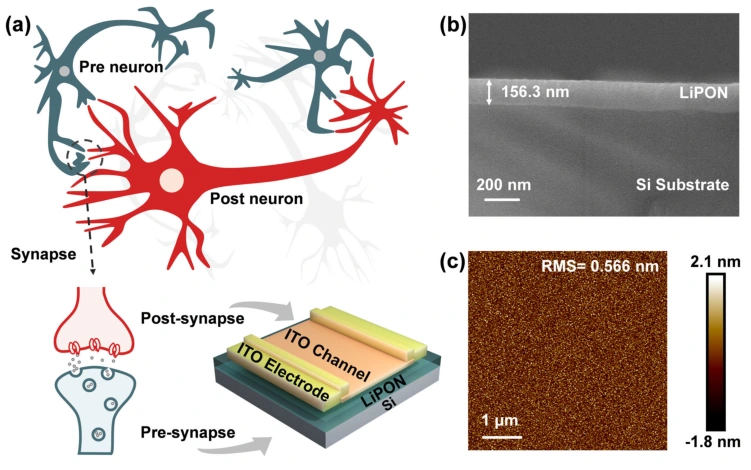
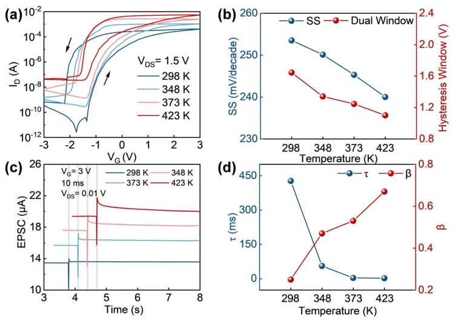
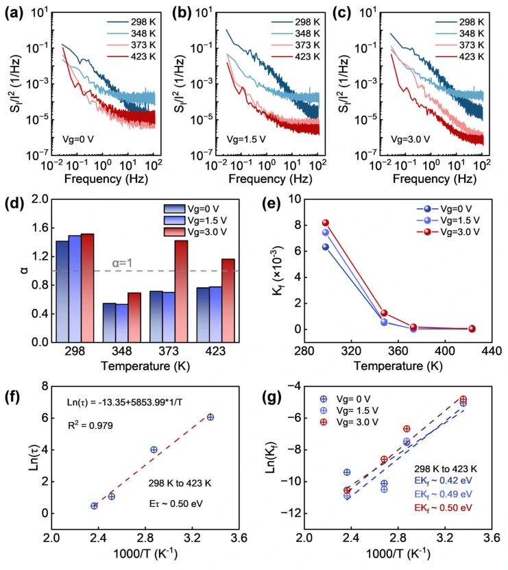
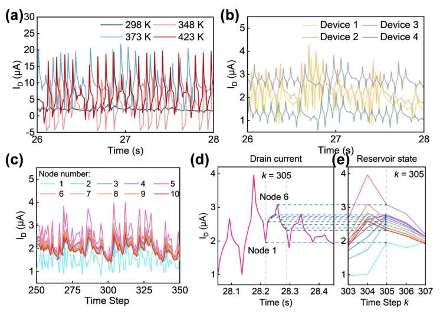

高温 LiPON 突触晶体管：从离子动态到储备池计算
固态锂离子电解质连接栅控与记忆
LiPON 的离子输运不依赖水介导的质子传导，为高温运行提供材料基础。器件利用栅极刺激引起的离子重分布调节 ITO 沟道电导，电刺激结束后的缓慢恢复则提供衰退记忆，可用于时间信息处理。

在 298–423 K 调节电学与时间响应
作者验证器件在 298–423 K 区间保持可调迟滞和时间响应，报告亚阈值摆幅为 240 mV/dec。温度改变离子动力学，使同一器件在不同温度下具有不同的非线性与记忆时间，为构建多样储备池节点提供调节手段。

通过噪声与弛豫分析理解界面动态
各温度下噪声功率谱以 1/f 成分为主，噪声强度系数 Kf 随温度升高而降低。Kf 与突触弛豫时间的 Arrhenius 分析均给出约 0.50 eV 的激活能。作者据此提出 LiPON/ITO 界面 Li⁺ 俘获与去俘获可能共同影响噪声和突触可塑性；这是相互支持的机制解释。

四个器件与温度编程扩展状态空间
物理储备池采用四个 LiPON 突触晶体管，结合不同温度条件与虚拟节点扩展生成 160 个储备池状态。输入序列被转换为带有非线性和历史依赖的电流响应，再由读出层用于预测。

利用可调动态表达输入历史
单器件在不同温度和多器件在相同刺激下给出具有差异的电流轨迹。作者利用这些差异生成丰富的状态表达，使输入时间序列映射到更高维度的特征空间。

用 NARMA2 检验时序预测能力
论文通过 NARMA2 非线性时间序列预测评估系统，最低归一化均方误差 NMSE 为 0.0246。器件实测动态、温度编程和读出层处理共同构成验证，展示了面向高温环境的神经形态硬件潜力。

High-Temperature LiPON-Gated Synaptic Transistors for Reservoir Computing
Peicheng Jiao, Zhiyuan Luo, Zhengdong Jiang, Yutao Xiong, Zhihao He, Songsong Yang, Jianmin Zeng, Yanghui Liu, Gang Liu
IEEE Transactions on Electron Devices 73 (2026), 5514–5519